<main class="ebook-book" id="topo">
<div class="book seg-ai" id="book">
<div class="page pg-capa" data-density="hard" data-section="capa" id="capa">
<div class="miolo" data-segment="p0-0"><div class="titulo-capa" data-segment="p0-1"><p class="selo-capa" data-segment="p0-2"><span>Educação 4.0 e 5.0 ·</span> <span>4º ano</span></p><h1 data-segment="p0-3">O Caso da Couve Mordida</h1><p class="sub-capa" data-segment="p0-4">Uma investigação na horta da escola</p></div></div>
</div>
<div class="page pg-texto pg-esq" data-section="rosto">
<div class="miolo rosto" data-segment="p1-0"><h2 data-segment="p1-1">O Caso da Couve Mordida</h2><p class="sub-rosto" data-segment="p1-2">Uma investigação na horta da escola</p><dl class="creditos"><dt data-segment="p1-3">Texto</dt><dd data-segment="p1-4"><span class="pendente">a definir</span></dd><dt data-segment="p1-5">Supervisão pedagógica</dt><dd data-segment="p1-6"><span class="pendente">a definir</span></dd><dt data-segment="p1-7">Revisão</dt><dd data-segment="p1-8"><span class="pendente">a definir</span></dd><dt data-segment="p1-9">Ilustrações</dt><dd data-segment="p1-10"><span class="pendente">a definir</span>, com apoio de inteligência artificial</dd><dt data-segment="p1-11">Projeto gráfico</dt><dd data-segment="p1-12"><span class="pendente">a definir</span></dd></dl><p class="editora" data-segment="p1-13">Analytica Ensino</p><p class="local-ed" data-segment="p1-14">Curitiba · 1ª edição · 2026</p><span class="num-pag">1</span></div>
</div>
<div class="page pg-hq fundo-creme pg-dir" id="quem" data-section="quem" role="region" aria-labelledby="quem-t">
<div class="miolo hq" data-segment="p2-0"><h2 class="hq-titulo" id="quem-t" data-segment="p2-1">Quem é quem</h2><div class="hq-elenco" style="flex:none"><div class="ficha-pers" data-segment="p2-2">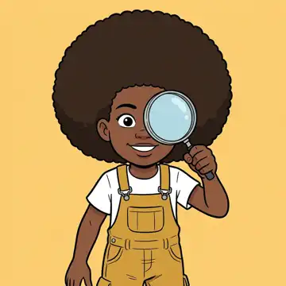<p class="nome-pers" data-segment="p2-3"><span class="artigo">a</span> Bené</p><p class="desc-pers" data-segment="p2-4">Detetive-chefe. Nunca sai sem a lupa.</p><p class="balao b-fala cauda-e solto" style="--cx:30%;--cy:50%;" data-segment="p2-5"><span class="sr">Bené: </span>Oi! Eu sou a Bené.</p></div><div class="ficha-pers" data-segment="p2-6">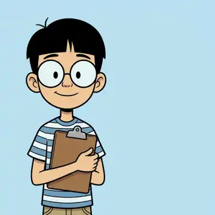<p class="nome-pers" data-segment="p2-7"><span class="artigo">o</span> Kenji</p><p class="desc-pers" data-segment="p2-8">Conta tudo. Tudo mesmo.</p><p class="balao b-fala cauda-e solto" style="--cx:30%;--cy:50%;" data-segment="p2-9"><span class="sr">Kenji: </span>E eu sou o Kenji!</p></div><div class="ficha-pers" data-segment="p2-10">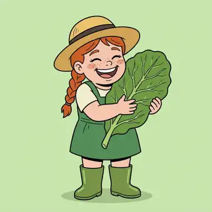<p class="nome-pers" data-segment="p2-11"><span class="artigo">a</span> Lu</p><p class="desc-pers" data-segment="p2-12">Cuida da horta como quem cuida de um amigo.</p><p class="balao b-fala cauda-e solto" style="--cx:30%;--cy:50%;" data-segment="p2-13"><span class="sr">Lu: </span>Eu sou a Lu!</p></div><div class="ficha-pers" data-segment="p2-14">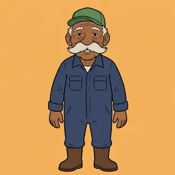<p class="nome-pers" data-segment="p2-15"><span class="artigo">o</span> Seu Osvaldo</p><p class="desc-pers" data-segment="p2-16">Zelador da escola. Sabe um pouco de tudo.</p><p class="balao b-fala cauda-e solto" style="--cx:30%;--cy:50%;" data-segment="p2-17"><span class="sr">Seu Osvaldo: </span>Eu sou o Seu Osvaldo.</p></div><div class="ficha-pers" data-segment="p2-18">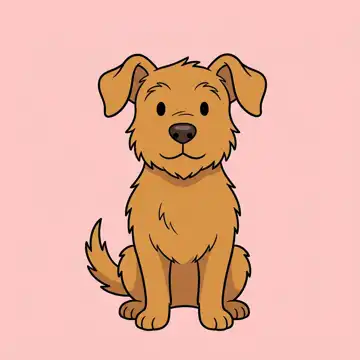<p class="nome-pers" data-segment="p2-19"><span class="artigo">o</span> Pipoca</p><p class="desc-pers" data-segment="p2-20">O cachorro da escola. Suspeito?</p><p class="balao b-onomatopeia cauda-n solto" style="--cx:30%;--rot:-8deg;--tam:6.4cqw;" data-segment="p2-21">AU-AU!</p></div></div><nav class="hq-indice" style="flex:none" aria-label="Neste livro"><ol class="indice"><li data-segment="p2-22"><a href="#caso">O caso</a><span>3</span></li><li data-segment="p2-23"><a href="#gibi">Como se lê um gibi</a><span>19</span></li><li data-segment="p2-24"><a href="#praticar">Caderno do detetive</a><span>20</span></li><li data-segment="p2-25"><a href="#sua-vez">Sua vez de criar</a><span>22</span></li><li data-segment="p2-26"><a href="#glossario">Palavras para lembrar</a><span>23</span></li></ol></nav><span class="num-pag">2</span></div>
</div>
<div class="page pg-hq fundo-branco pg-esq" id="caso" data-section="caso">
<div class="miolo sem-margem" data-segment="p3-0"><div class="hq-linha" style="flex:1 1 0"><figure class="quadro sangria" style="flex:1 1 0" data-segment="p3-1">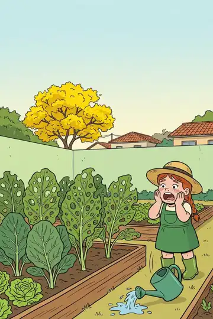<p class="balao b-recordatorio cauda-n" style="left:1%;top:1%;width:82%;--cx:50%;" data-segment="p3-2">Escola Ipê Amarelo. Segunda-feira, sete da manhã.</p><p class="balao b-grito cauda-b" style="left:44.5%;top:40%;width:42%;--cx:86%;" data-segment="p3-3"><span class="sr">Lu: </span>Minha couve!</p><p class="balao b-onomatopeia cauda-n" style="left:30%;top:83%;--cx:30%;--rot:-10deg;" data-segment="p3-4">PLOFT!</p></figure></div><span class="num-pag">3</span></div>
</div>
<div class="page pg-hq fundo-branco pg-dir" id="p04" data-section="p04">
<div class="miolo hq" data-segment="p4-0"><div class="hq-linha" style="flex:1 1 0"><figure class="quadro" style="flex:1 1 0" data-segment="p4-1">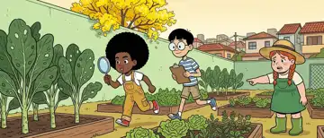<p class="balao b-fala cauda-d" style="left:1%;top:1%;width:26%;--cx:50%;--cy:58%;" data-segment="p4-2"><span class="sr">Bené: </span>Alguém pediu um detetive?</p><p class="balao b-fala cauda-b" style="left:64%;top:1%;width:34%;--cx:77%;--tam:3cqw;" data-segment="p4-3"><span class="sr">Lu: </span>Olhem isso! Está toda furada!</p></figure></div><div class="hq-linha" style="flex:1 1 0"><figure class="quadro" style="flex:1 1 0" data-segment="p4-4">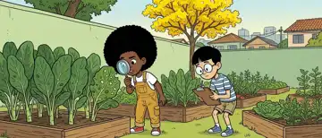<p class="balao b-fala cauda-d" style="left:1%;top:1%;width:26%;--cx:50%;--cy:62%;--tam:2.7cqw;" data-segment="p4-5"><span class="sr">Bené: </span>Hum... buracos redondos. Só sobrou o esqueleto da folha!</p><p class="balao b-fala cauda-b" style="left:50.5%;top:1%;width:34%;--cx:44%;" data-segment="p4-6"><span class="sr">Kenji: </span>37 buracos. Só nesta folha!</p></figure></div><div class="hq-linha" style="flex:1 1 0"><figure class="quadro" style="flex:1 1 0" data-segment="p4-7">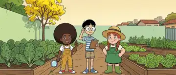<p class="balao b-fala cauda-b" style="left:1%;top:4%;width:50%;--cx:68%;" data-segment="p4-8"><span class="sr">Bené: </span>Turma, temos um caso.</p><p class="balao b-fala cauda-b" style="left:56.5%;top:1%;width:38%;--cx:26%;" data-segment="p4-9"><span class="sr">Lu: </span>E um comedor de couve à solta!</p></figure></div><span class="num-pag">4</span></div>
</div>
<div class="page pg-hq fundo-cortica pg-esq" id="suspeitos" data-section="suspeitos" role="region" aria-labelledby="suspeitos-t">
<div class="miolo hq" data-segment="p5-0"><h2 class="hq-titulo" id="suspeitos-t" data-segment="p5-1">Os suspeitos</h2><div class="hq-mural quatro" style="flex:1 1 0"><figure class="polaroid" style="--rot:-3deg" data-segment="p5-2"><figcaption data-segment="p5-3"><b>Pipoca.</b> Vive cavando a horta.</figcaption></figure><figure class="polaroid" style="--rot:2.5deg" data-segment="p5-4"><figcaption data-segment="p5-5"><b>Seu Osvaldo.</b> Tem a chave do portão.</figcaption></figure><figure class="polaroid" style="--rot:2deg" data-segment="p5-6">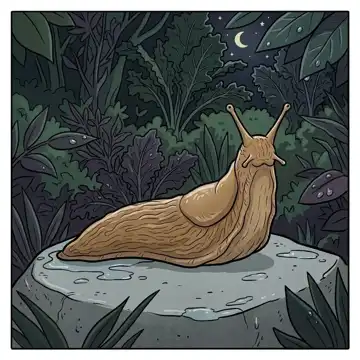<figcaption data-segment="p5-7"><b>Uma lesma.</b> Sai à noite e deixa rastro de gosma.</figcaption></figure><figure class="polaroid" style="--rot:-2.5deg" data-segment="p5-8">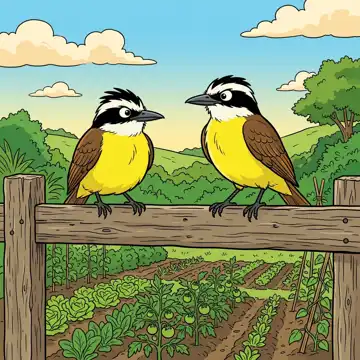<figcaption data-segment="p5-9"><b>Os passarinhos.</b> Vivem de olho na horta.</figcaption></figure></div><div class="hq-linha" style="flex:none;aspect-ratio:1.5"><figure class="quadro" style="flex:1 1 0" data-segment="p5-10">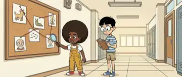<p class="balao b-fala cauda-b" style="left:46%;top:1%;width:38%;--cx:33%;--tam:3cqw;" data-segment="p5-11"><span class="sr">Bené: </span>Sem prova, ninguém é culpado!</p></figure></div><span class="num-pag">5</span></div>
</div>
<div class="page pg-hq fundo-branco pg-dir" id="p06" data-section="p06">
<div class="miolo hq" data-segment="p6-0"><div class="hq-linha" style="flex:1.1 1 0"><figure class="quadro" style="flex:1 1 0" data-segment="p6-1">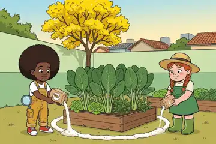<p class="balao b-recordatorio cauda-n" style="left:1%;top:1%;width:34%;--cx:50%;" data-segment="p6-2">No fim da tarde...</p><p class="balao b-fala cauda-b" style="left:1%;top:16%;width:82%;--cx:22%;" data-segment="p6-3"><span class="sr">Bené: </span>Farinha no chão: quem pisar deixa pegada.</p></figure></div><div class="hq-linha" style="flex:1.4 1 0"><figure class="quadro" style="flex:1 1 0" data-segment="p6-4">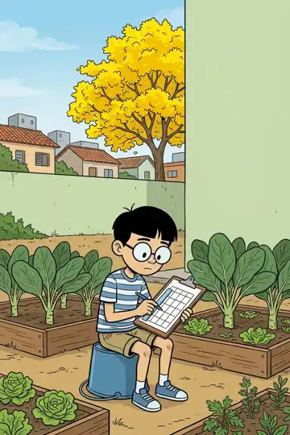<p class="balao b-fala cauda-b" style="left:1%;top:22%;width:78%;--cx:61%;" data-segment="p6-5"><span class="sr">Kenji: </span>E eu anoto os buracos novos. De noite e de dia.</p></figure><figure class="quadro" style="flex:1 1 0" data-segment="p6-6">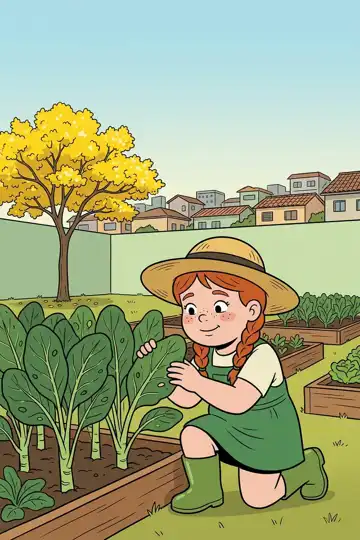<p class="balao b-cochicho cauda-b" style="left:1%;top:28%;width:94%;--cx:65%;" data-segment="p6-7"><span class="sr">Lu: </span>Aguenta firme, couvinha.</p></figure></div><span class="num-pag">6</span></div>
</div>
<div class="page pg-hq pg-dupla pg-esq" id="noite" data-section="noite">
<div class="miolo sem-margem" data-segment="p7-0"><figure class="dupla esq" data-segment="p7-1">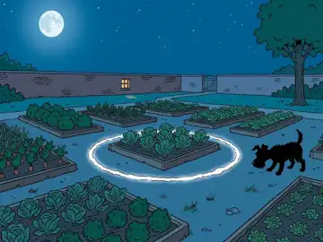<p class="balao b-recordatorio cauda-n" style="left:5%;top:5%;width:52%;--cx:30%;" data-segment="p7-2">Naquela noite, a escola dormia...</p></figure><span class="num-pag">7</span></div>
</div>
<div class="page pg-hq pg-dupla pg-dir" data-section="noiteb">
<div class="miolo sem-margem" data-segment="p8-0"><figure class="dupla dir" data-segment="p8-1"><p class="balao b-onomatopeia cauda-n" style="left:30%;top:74%;--cx:30%;--rot:-6deg;--tam:8cqw;" data-segment="p8-2">CRI-CRI...</p><p class="balao b-recordatorio cauda-n" style="left:40%;top:5%;width:54%;--cx:30%;" data-segment="p8-3">...mas alguém estava acordado.</p></figure><span class="num-pag">8</span></div>
</div>
<div class="page pg-hq fundo-branco pg-esq" id="p09" data-section="p09">
<div class="miolo hq" data-segment="p9-0"><div class="hq-linha" style="flex:1 1 0"><figure class="quadro" style="flex:1 1 0" data-segment="p9-1">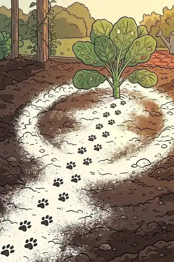<p class="balao b-recordatorio cauda-n" style="left:1%;top:1%;width:86%;--cx:50%;" data-segment="p9-2">Terça, sete da manhã.</p><p class="balao b-fala cauda-e" style="left:3.8%;top:16%;width:74%;--cx:50%;--cy:50%;" data-segment="p9-3"><span class="sr">Kenji: </span>Pegadas! Quatro dedinhos e uma almofadinha.</p></figure><figure class="quadro" style="flex:1 1 0" data-segment="p9-4">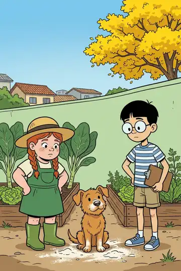<p class="balao b-grito cauda-b" style="left:1%;top:22%;width:66%;--cx:35%;" data-segment="p9-5"><span class="sr">Lu: </span>Pipoooca!</p><p class="balao b-onomatopeia cauda-n" style="left:44%;top:47%;--cx:30%;--rot:-10deg;--tam:6.5cqw;" data-segment="p9-6">AU?</p></figure></div><div class="hq-linha" style="flex:1 1 0"><figure class="quadro" style="flex:1 1 0" data-segment="p9-7">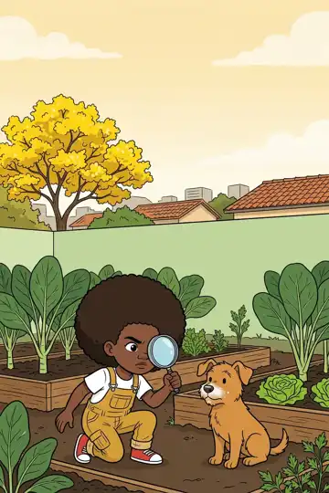<p class="balao b-fala cauda-b" style="left:1%;top:32.5%;width:86%;--cx:45%;" data-segment="p9-8"><span class="sr">Bené: </span>Calma. Ele tem farinha no focinho...</p></figure><figure class="quadro" style="flex:1 1 0" data-segment="p9-9">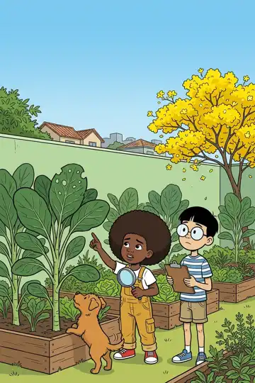<p class="balao b-fala cauda-b" style="left:32.5%;top:8.5%;width:30%;--cx:65%;" data-segment="p9-10"><span class="sr">Bené: </span>...mas tem furo lá no alto!</p><p class="balao b-fala cauda-b" style="left:64%;top:22%;width:34%;--cx:41%;--tam:3cqw;" data-segment="p9-11"><span class="sr">Kenji: </span>Nem pulando ele alcança!</p></figure></div><span class="num-pag">9</span></div>
</div>
<div class="page pg-hq fundo-branco pg-dir" id="p10" data-section="p10">
<div class="miolo hq" data-segment="p10-0"><div class="hq-linha" style="flex:1 1 0"><figure class="quadro" style="flex:1 1 0" data-segment="p10-1">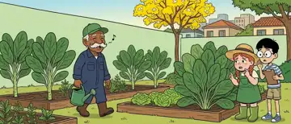<p class="balao b-cochicho cauda-b" style="left:41.5%;top:4%;width:58%;--cx:91%;" data-segment="p10-2"><span class="sr">Kenji: </span>E se for o Seu Osvaldo?</p><p class="balao b-cochicho cauda-d" style="left:43%;top:25%;width:34%;--cx:50%;--cy:50%;" data-segment="p10-3"><span class="sr">Lu: </span>Ele tem a chave...</p></figure></div><div class="hq-linha" style="flex:1 1 0"><figure class="quadro" style="flex:1 1 0" data-segment="p10-4">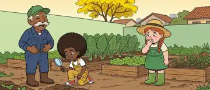<p class="balao b-fala cauda-e" style="left:25%;top:1%;width:34%;--cx:50%;--cy:51%;--tam:3cqw;" data-segment="p10-5"><span class="sr">Seu Osvaldo: </span>Eu? Couve crua? Gosto é de couve refogada!</p><p class="balao b-fala cauda-e" style="left:44.5%;top:50.5%;width:46%;--cx:50%;--cy:39%;" data-segment="p10-6"><span class="sr">Bené: </span>Botas limpinhas. Nem sinal de farinha.</p></figure></div><div class="hq-linha" style="flex:1 1 0"><figure class="quadro" style="flex:1 1 0" data-segment="p10-7">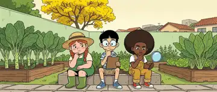<p class="balao b-fala cauda-b" style="left:1%;top:4%;width:74%;--cx:67%;" data-segment="p10-8"><span class="sr">Kenji: </span>E a lesma? Nenhum rastro de gosma.</p><p class="balao b-pensamento cauda-e" style="left:76%;top:1%;width:22%;--cx:50%;--cy:74%;--tam:3cqw;" data-segment="p10-9"><span class="sr">Bené: </span>Sobrou um suspeito... ou nenhum.</p></figure></div><span class="num-pag">10</span></div>
</div>
<div class="page pg-hq fundo-caderno pg-esq" id="dados" data-section="dados" role="region" aria-labelledby="dados-t">
<div class="miolo hq" data-segment="p11-0"><h2 class="hq-titulo" id="dados-t" data-segment="p11-1">O caderno do Kenji</h2><div class="hq-bloco" style="flex:none"><table class="precos"><caption data-segment="p11-2">Buracos novos na couve</caption><thead><tr data-segment="p11-3"><th scope="col">Dia</th><th scope="col" class="num">De noite</th><th scope="col" class="num">De dia</th></tr></thead><tbody><tr data-segment="p11-4"><td>Terça</td><td class="num">7</td><td class="num">8</td></tr><tr data-segment="p11-5"><td>Quarta</td><td class="num">10</td><td class="num">12</td></tr><tr data-segment="p11-6"><td>Quinta</td><td class="num">14</td><td class="num">17</td></tr></tbody></table></div><div class="hq-barras" style="flex:none" role="img" aria-label="Total de buracos novos por dia: Terça, 15; Quarta, 22; Quinta, 31." data-segment="p11-7"><p class="b-tit" aria-hidden="true" data-segment="p11-8">Total de buracos novos por dia</p><div aria-hidden="true"><div class="barra"><span class="b-rot">Terça</span><span class="b-trilho"><span class="b-cheia" style="width:43%"></span></span><b class="b-val">15</b></div><div class="barra"><span class="b-rot">Quarta</span><span class="b-trilho"><span class="b-cheia" style="width:63%"></span></span><b class="b-val">22</b></div><div class="barra"><span class="b-rot">Quinta</span><span class="b-trilho"><span class="b-cheia" style="width:89%"></span></span><b class="b-val">31</b></div></div></div><div class="hq-linha" style="flex:1 1 0"><figure class="quadro" style="flex:1 1 0" data-segment="p11-9">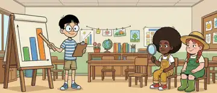<p class="balao b-fala cauda-e" style="left:40%;top:1%;width:46%;--cx:50%;--cy:61%;" data-segment="p11-10"><span class="sr">Kenji: </span>De dia e de noite. Cada dia, mais buracos!</p><p class="balao b-fala cauda-d" style="left:29.5%;top:41.5%;width:38%;--cx:50%;--cy:29%;" data-segment="p11-11"><span class="sr">Bené: </span>Ele come o tempo todo, e cada vez com mais fome!</p></figure></div><span class="num-pag">11</span></div>
</div>
<div class="page pg-hq fundo-branco pg-dir" id="p12" data-section="p12">
<div class="miolo hq" data-segment="p12-0"><div class="hq-linha" style="flex:1.3 1 0"><figure class="quadro" style="flex:1 1 0" data-segment="p12-1">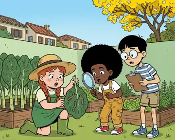<p class="balao b-fala cauda-b" style="left:1%;top:19%;width:38%;--cx:75%;" data-segment="p12-2"><span class="sr">Lu: </span>Gente... olhem embaixo da folha!</p></figure></div><div class="hq-linha" style="flex:1 1 0"><figure class="quadro" style="flex:1 1 0" data-segment="p12-3">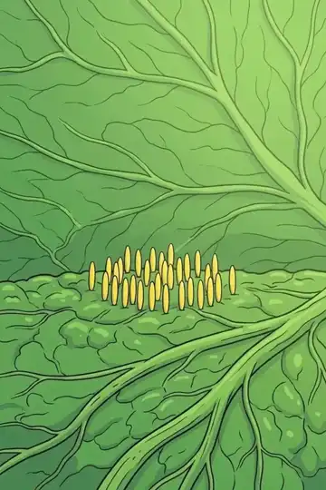<p class="balao b-fala cauda-e" style="left:5.8%;top:1%;width:86%;--cx:50%;--cy:50%;" data-segment="p12-4"><span class="sr">Bené: </span>Ovinhos amarelos, em pé, bem juntinhos.</p></figure><figure class="quadro" style="flex:1 1 0" data-segment="p12-5">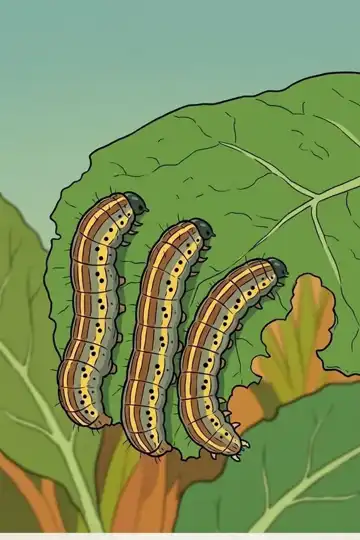<p class="balao b-fala cauda-e" style="left:5.8%;top:1%;width:70%;--cx:50%;--cy:50%;" data-segment="p12-6"><span class="sr">Kenji: </span>Lagartas listradas! Comendo!</p></figure><figure class="quadro" style="flex:1 1 0" data-segment="p12-7">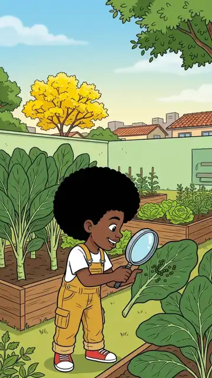<p class="balao b-fala cauda-b" style="left:1%;top:4%;width:94%;--cx:47%;" data-segment="p12-8"><span class="sr">Bené: </span>E isso é cocô de lagarta. Caso resolvido!</p></figure></div><span class="num-pag">12</span></div>
</div>
<div class="page pg-hq fundo-branco pg-esq" id="p13" data-section="p13">
<div class="miolo hq" data-segment="p13-0"><div class="hq-linha" style="flex:1 1 0"><figure class="quadro" style="flex:1 1 0" data-segment="p13-1">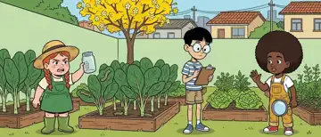<p class="balao b-grito cauda-b" style="left:1%;top:1%;width:34%;--cx:35%;--tam:3cqw;" data-segment="p13-2"><span class="sr">Lu: </span>Vamos tirar todas!</p><p class="balao b-fala cauda-d" style="left:37%;top:1%;width:18%;--cx:50%;--cy:71%;" data-segment="p13-3"><span class="sr">Kenji: </span>São 23. Eu contei.</p><p class="balao b-fala cauda-b" style="left:62.5%;top:1%;width:34%;--cx:82%;" data-segment="p13-4"><span class="sr">Bené: </span>Espera!</p></figure></div><div class="hq-linha" style="flex:1 1 0"><figure class="quadro" style="flex:1 1 0" data-segment="p13-5">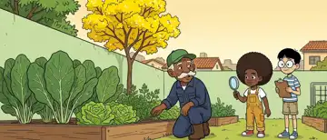<p class="balao b-fala cauda-b" style="left:1%;top:1%;width:70%;--cx:80%;" data-segment="p13-6"><span class="sr">Seu Osvaldo: </span>Antes de decidir... vocês sabem em que essas lagartas se transformam?</p></figure></div><div class="hq-linha" style="flex:1 1 0"><figure class="quadro" style="flex:1 1 0" data-segment="p13-7">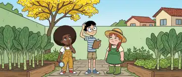<p class="balao b-pensamento cauda-b" style="left:1%;top:1%;width:42%;--cx:78%;" data-segment="p13-8"><span class="sr">Bené: </span>Lagarta vira... vira...</p><p class="balao b-pensamento cauda-b" style="left:58%;top:7%;width:34%;--cx:21%;" data-segment="p13-9"><span class="sr">Lu: </span>Vira o quê?</p></figure></div><span class="num-pag">13</span></div>
</div>
<div class="page pg-hq fundo-branco pg-dir" id="borboletas" data-section="borboletas">
<div class="miolo sem-margem" data-segment="p14-0"><div class="hq-linha" style="flex:1 1 0"><figure class="quadro sangria" style="flex:1 1 0" data-segment="p14-1">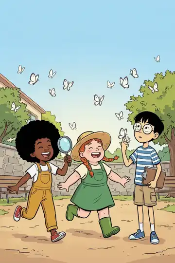<p class="balao b-recordatorio cauda-n" style="left:1%;top:1%;width:90%;--cx:50%;" data-segment="p14-2">Seu Osvaldo contou: essas lagartas viram as borboletas brancas que todo mundo adora ver no recreio.</p><p class="balao b-grito cauda-b" style="left:37%;top:37%;width:38%;--cx:38%;" data-segment="p14-3"><span class="sr">Lu: </span>As minhas borboletas?!</p></figure></div><span class="num-pag">14</span></div>
</div>
<div class="page pg-hq fundo-creme pg-esq" id="cadeia" data-section="cadeia" role="region" aria-labelledby="cadeia-t">
<div class="miolo hq" data-segment="p15-0"><h2 class="hq-titulo" id="cadeia-t" data-segment="p15-1">Quem se alimenta de quem?</h2><div class="hq-cadeia" style="flex:none"><div class="elo" data-segment="p15-2"><span class="sol" role="img" aria-label="Sol" data-segment="p15-3"></span><p data-segment="p15-4">Sol</p></div><span class="seta" aria-hidden="true">→</span><div class="elo" data-segment="p15-5">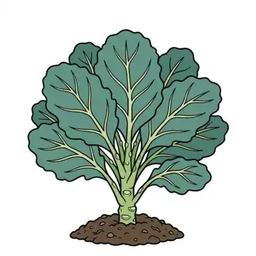<p data-segment="p15-6">Couve</p></div><span class="seta" aria-hidden="true">→</span><div class="elo" data-segment="p15-7">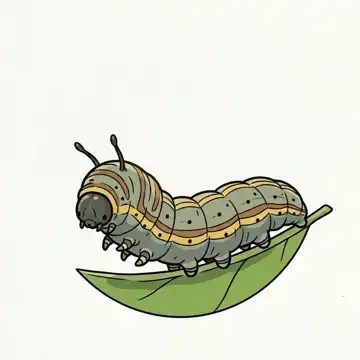<p data-segment="p15-8">Lagarta</p></div><span class="seta" aria-hidden="true">→</span><div class="elo" data-segment="p15-9">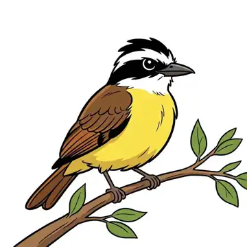<p data-segment="p15-10">Passarinho</p></div></div><div class="hq-bloco" style="flex:none"><p data-segment="p15-11">Isso é uma <strong>cadeia alimentar</strong>. A seta vai do alimento para quem se alimenta dele. Tudo começa na luz do Sol.</p></div><div class="hq-linha" style="flex:1 1 0"><figure class="quadro" style="flex:1 1 0" data-segment="p15-12">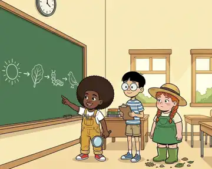<p class="balao b-fala cauda-b" style="left:8.5%;top:2.5%;width:34%;--cx:85%;" data-segment="p15-13"><span class="sr">Bené: </span>A couve faz o próprio alimento com a luz do Sol.</p><p class="balao b-fala cauda-b" style="left:46%;top:1%;width:26%;--cx:69%;" data-segment="p15-14"><span class="sr">Kenji: </span>A lagarta come a couve. O passarinho come a lagarta.</p><p class="balao b-fala cauda-b" style="left:76%;top:23.5%;width:22%;--cx:23%;" data-segment="p15-15"><span class="sr">Lu: </span>Ninguém vive sozinho!</p></figure></div><span class="num-pag">15</span></div>
</div>
<div class="page pg-hq fundo-branco pg-dir" id="p16" data-section="p16">
<div class="miolo hq" data-segment="p16-0"><div class="hq-linha" style="flex:1.1 1 0"><figure class="quadro" style="flex:1 1 0" data-segment="p16-1">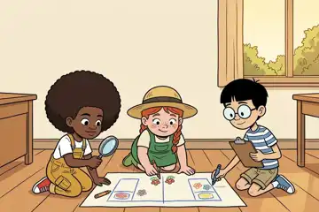<p class="balao b-fala cauda-b" style="left:1%;top:7%;width:38%;--cx:66%;" data-segment="p16-2"><span class="sr">Bené: </span>E se a horta tiver dois lados?</p><p class="balao b-fala cauda-b" style="left:40%;top:7%;width:18%;--cx:59%;" data-segment="p16-3"><span class="sr">Lu: </span>Um para a gente...</p><p class="balao b-fala cauda-b" style="left:64%;top:10%;width:34%;--cx:36%;" data-segment="p16-4"><span class="sr">Kenji: </span>...e um para as lagartas!</p></figure></div><div class="hq-linha" style="flex:1.4 1 0"><figure class="quadro" style="flex:1 1 0" data-segment="p16-5">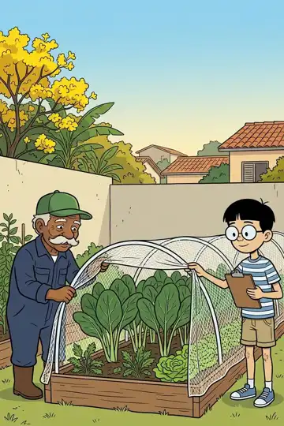<p class="balao b-fala cauda-b" style="left:1%;top:19%;width:86%;--cx:16%;" data-segment="p16-6"><span class="sr">Seu Osvaldo: </span>Com a tela fina, a borboleta não entra para botar ovo.</p></figure><figure class="quadro" style="flex:1 1 0" data-segment="p16-7">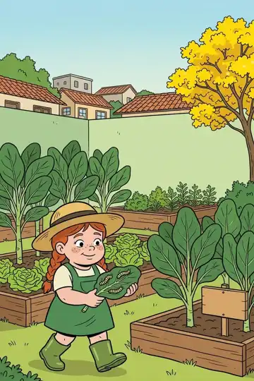<span class="placa" aria-hidden="true" style="left:78%;top:77%;width:18%;--rot:0deg;--tam:1.9cqw">Borboletas</span><p class="balao b-fala cauda-b" style="left:1%;top:28%;width:82%;--cx:25%;" data-segment="p16-8"><span class="sr">Lu: </span>Mudança, pessoal! Casa nova, com couve à vontade.</p></figure></div><span class="num-pag">16</span></div>
</div>
<div class="page pg-hq fundo-branco pg-esq" id="p17" data-section="p17">
<div class="miolo hq" data-segment="p17-0"><div class="hq-linha" style="flex:1 1 0"><figure class="quadro" style="flex:1 1 0" data-segment="p17-1">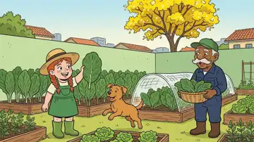<p class="balao b-recordatorio cauda-n" style="left:1%;top:1%;width:30%;--cx:50%;" data-segment="p17-2">Duas semanas depois.</p><p class="balao b-fala cauda-e" style="left:34%;top:2.5%;width:26%;--cx:50%;--cy:77%;" data-segment="p17-3"><span class="sr">Lu: </span>Couve inteirinha! Hoje tem salada.</p><p class="balao b-fala cauda-b" style="left:64%;top:1%;width:34%;--cx:49%;" data-segment="p17-4"><span class="sr">Seu Osvaldo: </span>E couve refogada!</p></figure></div><div class="hq-bloco" style="flex:none"><table class="precos"><caption data-segment="p17-5">Buracos novos no canteiro com tela</caption><thead><tr data-segment="p17-6"><th scope="col">Quando</th><th scope="col" class="num">Buracos</th></tr></thead><tbody><tr data-segment="p17-7"><td>Antes da tela, em 3 dias</td><td class="num">68</td></tr><tr data-segment="p17-8"><td>Com a tela, em 2 semanas</td><td class="num">6</td></tr></tbody></table></div><div class="hq-linha" style="flex:1 1 0"><figure class="quadro" style="flex:1 1 0" data-segment="p17-9">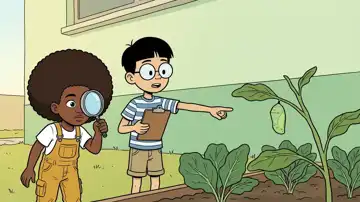<p class="balao b-fala cauda-e" style="left:52%;top:2.5%;width:42%;--cx:50%;--cy:61%;" data-segment="p17-10"><span class="sr">Kenji: </span>Olhem! As lagartas viraram casulo!</p><p class="balao b-fala cauda-e" style="left:34%;top:50.5%;width:34%;--cx:50%;--cy:29%;" data-segment="p17-11"><span class="sr">Bené: </span>Crisálida, Kenji! Borboleta faz crisálida.</p></figure></div><span class="num-pag">17</span></div>
</div>
<div class="page pg-hq fundo-branco pg-dir" id="fim-caso" data-section="fim-caso">
<div class="miolo sem-margem" data-segment="p18-0"><div class="hq-linha" style="flex:1 1 0"><figure class="quadro sangria" style="flex:1 1 0" data-segment="p18-1">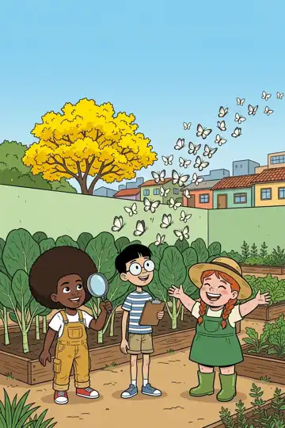<p class="balao b-recordatorio cauda-n" style="left:1%;top:1%;width:42%;--cx:50%;" data-segment="p18-2">E numa manhã de sol...</p><p class="balao b-fala cauda-b" style="left:1%;top:49%;width:34%;--cx:66%;" data-segment="p18-3"><span class="sr">Bené: </span>Caso encerrado.</p><p class="balao b-fala cauda-b" style="left:47.5%;top:47.5%;width:34%;--cx:85%;" data-segment="p18-4"><span class="sr">Lu: </span>Não, Bené. Caso compartilhado!</p></figure></div><span class="num-pag">18</span></div>
</div>
<div class="page pg-hq fundo-creme pg-esq" id="gibi" data-section="gibi" role="region" aria-labelledby="gibi-t">
<div class="miolo hq" data-segment="p19-0"><h2 class="hq-titulo" id="gibi-t" data-segment="p19-1">Como se lê um gibi</h2><div class="hq-exemplos" style="flex:none"><div class="exemplo"><p class="balao b-fala cauda-b solto" style="--cx:30%;" data-segment="p19-2">Oi! Tudo bem?</p><p class="legenda-ex" data-segment="p19-3"><strong>Balão de fala.</strong> A pontinha mostra quem está falando.</p></div><div class="exemplo"><p class="balao b-grito cauda-b solto" style="--cx:30%;" data-segment="p19-4">Socorro!</p><p class="legenda-ex" data-segment="p19-5"><strong>Balão de grito.</strong> Contorno forte e letras grandes.</p></div><div class="exemplo"><p class="balao b-cochicho cauda-b solto" style="--cx:30%;" data-segment="p19-6">Psiu... é segredo.</p><p class="legenda-ex" data-segment="p19-7"><strong>Cochicho.</strong> Contorno tracejado: fala baixinho.</p></div><div class="exemplo"><p class="balao b-pensamento cauda-b solto" style="--cx:30%;" data-segment="p19-8">Hum...</p><p class="legenda-ex" data-segment="p19-9"><strong>Pensamento.</strong> Em forma de nuvem: ninguém ouve.</p></div><div class="exemplo"><p class="balao b-recordatorio cauda-n solto" style="--cx:30%;" data-segment="p19-10">No dia seguinte...</p><p class="legenda-ex" data-segment="p19-11"><strong>Recordatório.</strong> O narrador conta onde e quando.</p></div><div class="exemplo"><p class="balao b-onomatopeia cauda-n solto" style="--cx:30%;--rot:-6deg;--tam:8cqw;" data-segment="p19-12">CRI-CRI</p><p class="legenda-ex" data-segment="p19-13"><strong>Onomatopeia.</strong> Palavra que imita um som.</p></div></div><span class="num-pag">19</span></div>
</div>
<div class="page pg-texto pg-dir" id="praticar" data-section="praticar">
<div class="miolo alto" data-segment="p20-0"><h2 id="praticar-t" data-segment="p20-1">Caderno do detetive</h2><div class="desafio"><p data-segment="p20-2"><b>1.</b> Releia a tabela do Kenji, na página 11. Em que dia apareceram mais buracos novos? Quantos a mais do que na terça?</p><button type="button" class="ver-resposta" aria-expanded="false">Ver resposta</button><p class="resposta" hidden="" data-segment="p20-3">Na quinta, com 31 buracos novos. São 16 a mais do que na terça: 31 menos 15 dá 16.</p></div><div class="desafio"><p data-segment="p20-4"><b>2.</b> Na página 9, a Bené descobriu que o Pipoca era inocente. Que pista ela usou?</p><button type="button" class="ver-resposta" aria-expanded="false">Ver resposta</button><p class="resposta" hidden="" data-segment="p20-5">As folhas novas, lá no alto do pé de couve, também estavam furadas. O Pipoca não alcança aquela altura, nem pulando.</p></div><span class="num-pag">20</span></div>
</div>
<div class="page pg-texto pg-esq" data-section="praticar2">
<div class="miolo alto" data-segment="p21-0"><div class="desafio"><p data-segment="p21-1"><b>3.</b> Monte uma cadeia alimentar com capim, sapo e gafanhoto. Comece pelo Sol e desenhe as setas.</p><button type="button" class="ver-resposta" aria-expanded="false">Ver resposta</button><p class="resposta" hidden="" data-segment="p21-2">Sol → capim → gafanhoto → sapo. A seta vai do alimento para quem come.</p></div><div class="desafio"><p data-segment="p21-3"><b>4.</b> Procure no livro um balão de grito, um balão de pensamento e uma onomatopeia. O que cada um mostra?</p><button type="button" class="ver-resposta" aria-expanded="false">Ver uma ideia</button><p class="resposta" hidden="" data-segment="p21-4">Grito: a Lu gritando "Minha couve!" (página 3). Pensamento: a Bené pensando "Lagarta vira... vira..." (página 13). Onomatopeia: "CRI-CRI", o som dos grilos (página 8).</p></div><span class="num-pag">21</span></div>
</div>
<div class="page pg-hq fundo-creme pg-dir" id="sua-vez" data-section="sua-vez" role="region" aria-labelledby="sua-vez-t">
<div class="miolo hq" data-segment="p22-0"><h2 class="hq-titulo" id="sua-vez-t" data-segment="p22-1">Sua vez de criar!</h2><div class="hq-bloco" style="flex:none"><p data-segment="p22-2">Invente o próximo caso da Turma da Horta. No caderno, desenhe quatro quadros como estes. Use um balão de fala, um recordatório e uma onomatopeia.</p></div><div class="hq-vazios" style="flex:1 1 0" aria-hidden="true"><span><i></i></span><span><i></i></span><span><i></i></span><span><i></i></span></div><span class="num-pag">22</span></div>
</div>
<div class="page pg-texto pg-esq" id="glossario" data-section="glossario">
<div class="miolo alto" data-segment="p23-0"><h2 id="glossario-t" data-segment="p23-1">Palavras para lembrar</h2><dl class="glossario compacto"><dt data-segment="p23-2">Pista</dt><dd data-segment="p23-3">Sinal que ajuda a descobrir o que aconteceu.</dd><dt data-segment="p23-4">Hipótese</dt><dd data-segment="p23-5">Uma ideia que a gente testa para ver se é verdade.</dd><dt data-segment="p23-6">Cadeia alimentar</dt><dd data-segment="p23-7">Quem serve de alimento para quem. Tudo começa com a luz do Sol e as plantas.</dd><dt data-segment="p23-8">Crisálida</dt><dd data-segment="p23-9">Fase em que a lagarta se transforma em borboleta.</dd><dt data-segment="p23-10">Onomatopeia</dt><dd data-segment="p23-11">Palavra que imita um som, como CRI-CRI.</dd></dl><span class="num-pag">23</span></div>
</div>
<div class="page pg-texto pg-dir" id="ficha" data-section="ficha">
<div class="miolo fim-livro" data-segment="p24-0"><p class="fim" id="fim-da-leitura" data-section="fim" data-segment="p24-1">Fim!</p><dl class="ficha-mini"><dt data-segment="p24-2">Tema</dt><dd data-segment="p24-3">Educação 4.0 e 5.0</dd><dt data-segment="p24-4">Ano</dt><dd data-segment="p24-5">4º ano do Ensino Fundamental</dd><dt data-segment="p24-6">BNCC</dt><dd data-segment="p24-7">EF15LP14, EF35LP04, EF04MA27, EF04MA28, EF04CI04</dd><dt data-segment="p24-8">Professor</dt><dd data-segment="p24-9">Guia do Professor · O Caso da Couve Mordida</dd></dl><p class="nota-ia" data-segment="p24-10"><b>Uso de inteligência artificial.</b> A inteligência artificial foi usada como ferramenta de apoio nas ilustrações e na revisão. Texto, direção de arte e validação pedagógica são da equipe.</p><p class="direitos" data-segment="p24-11">© 2026 Analytica Ensino Ltda., CNPJ 42.506.572/0001-97. Todos os direitos reservados. Uso autorizado no ambiente digital da plataforma Analytica Ensino.</p><span class="num-pag">24</span></div>
</div>
<div class="page pg-contracapa" data-density="hard">
<div class="miolo" data-segment="p25-0"><p class="sinopse" data-segment="p25-1">Alguém está comendo a couve da horta da escola! A detetive Bené, o Kenji, que conta tudo, e a Lu, que cuida da horta, juntam pistas, testam hipóteses e organizam dados numa tabela. A descoberta vai mudar o jeito como a turma vê a horta e as borboletas do recreio.</p><p class="selo-capa" data-segment="p25-2"><span>Educação 4.0 e 5.0 ·</span> <span>4º ano</span></p><p class="editora-cc" data-segment="p25-3">Analytica Ensino</p></div>
</div>
</div>
</main>
